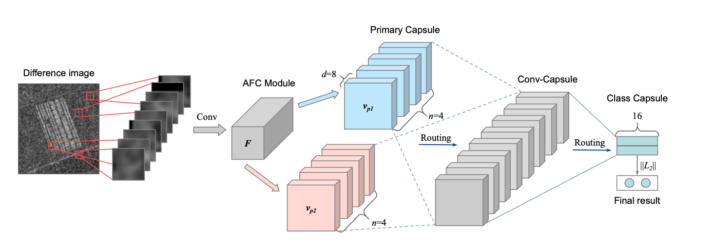
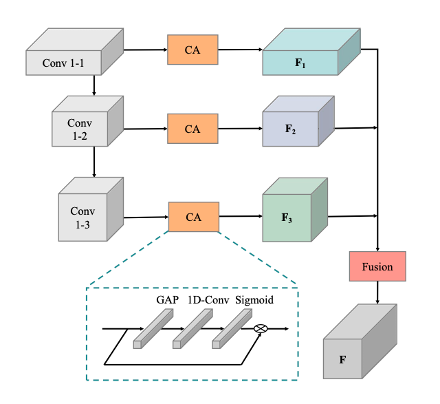

4 Ms-CapsNet
SAR Image Change Detection Based on Multiscale Capsule Network
4.1 Ms-CapsNet: SAR Image Change Detection Based on Multiscale Capsule Network (Gao et al. 2021)
4.1.1 Abstract
Los métodos tradicionales de detección de cambios en imágenes de radar de apertura sintética basados en redes neuronales convolucionales (CNN) se enfrentan a los retos del ruido de moteado y la sensibilidad a la deformación. Para mitigar estos problemas, propusimos una red de cápsulas multiescala (Ms-CapsNet) para extraer la información discriminativa entre los píxeles cambiados y los no cambiados. Por un lado, el módulo de cápsula multiescala se emplea para explotar la relación espacial de las características. Por lo tanto, se pueden conseguir propiedades equivariantes agregando las características de diferentes posiciones. Por otro lado, se diseña un módulo de convolución de fusión adaptativa (AFC) para la Ms-CapsNet propuesta. Se pueden capturar características semánticas más altas para las cápsulas primarias. Las características extraídas por el módulo AFC mejoran significativamente la robustez frente al ruido de moteado. La eficacia de la Ms-CapsNet propuesta se verifica en tres conjuntos de datos SAR reales. Los experimentos de comparación con cuatro métodos de vanguardia demuestran la eficacia del método propuesto.
Respositorio: https://github.com/summitgao/SAR_CD_MS_CapsNet.
4.1.2 Introducción
Aunque se han propuesto muchas técnicas, la detección de cambios en las imágenes SAR sigue siendo una tarea difícil. La calidad de la imagen se ve deteriorada por el ruido de moteado que dificulta la interpretación meticulosa de los datos SAR. Se han implementado muchos métodos para abordar el problema del ruido de moteado. Suelen constar de tres pasos:
- Coregistro de imágenes: El corregistro de imágenes es una tarea fundamental para establecer las correspondencias espaciales entre las imágenes SAR multitemporales.
- Generación de imágenes de diferencia (DI) : La DI se genera habitualmente mediante los operadores log- ratio, Gauss-ratio [5] y neighborhood-ratio [6].
- Clasificación de DI: la mayoría de las investigaciones se dedican a construir un clasificador robusto. Se trata de una tarea no trivial, ya que un clasificador potente determina directamente la precisión de la detección de cambios.
Muchos investigadores se dedican a desarrollar clasificadores potentes para la detección de cambios. Li et al. [7] diseñaron un algoritmo de clustering de dos niveles para la detección de cambios sin supervisión. En [8], la información de vecindad local se incorpora a la función objetivo de clustering para mejorar el rendimiento de la detección de cambios. Gong et al. [9] desarrollaron un campo aleatorio de Markov (MRF) mejorado basado en el clustering de c-medias difusas (FCM) para suprimir el ruido de moteado. En [4], se emplearon las máquinas de Boltzmann restringidas (RBM) apiladas para la detección de cambios en las imágenes SAR. Aunque los métodos anteriores lograron un rendimiento prometedor, las capacidades de representación de características siguen siendo limitadas.
En los últimos años, las redes neuronales convolucionales (CNN) han mejorado mucho el rendimiento de muchas tareas visuales. Se ha demostrado que es bastante eficaz para el aprendizaje robusto de características. Los modelos basados en CNN se han aplicado con éxito en la detección de cambios en imágenes de teledetección [10]. Wang et al. [11] propusieron un marco de CNN de extremo a extremo para aprender características discriminativas de la matriz de afinidad mixta para la detección de cambios.
Más tarde, se desarrolló el modelado de ruido profundo no supervisado para la detección de cambios en imágenes hiperespectrales [12]. Liu et al. [13] propusieron una elegante CNN local restringida (LR-CNN) para la detección de cambios polarimétricos en SAR. En [14], se aplicó el aprendizaje profundo transferido a la detección de cambios en imágenes SAR de hielo marino basado en CNN. Aunque los métodos basados en CNN han logrado un excelente rendimiento en la detección de cambios, la precisión a veces se deteriora en el caso de la transformación, como las inclinaciones y rotaciones. En concreto, la CNN es incapaz de modelar la relación posicional entre los objetos del suelo.
Más recientemente, Sabour y Hinton propusieron la red Capsule (CapsNet) para dar solución a los problemas en los que los modelos CNN son inadecuados [15]. En CapsNet, un vector de actividad de cápsulas representa los parámetros de instanciación de la entidad, como la pose, la textura y la deformación. La existencia de entidades se expresa mediante la longitud de los parámetros de instanciación. El mecanismo de enrutamiento dinámico se utiliza para la propagación de la información. Se ha comprobado empíricamente que CapsNet es eficaz para el análisis de imágenes de teledetección [16] [17]. Hasta donde sabemos, la literatura sobre la detección de cambios en SAR basada en CapsNet es muy escasa.

Sostenemos que la debilidad de los enfoques existentes de detección de cambios en imágenes SAR proviene principalmente de dos aspectos: Uno es que la correlación de las características de diferentes posiciones no se puede modelar de forma efectiva. El otro es el ruido intrínseco del moteado en las imágenes SAR. Para hacer frente a los problemas mencionados, se propone una red de cápsulas multiescala (Ms-CapsNet) para extraer la información discriminativa entre las imágenes SAR multitemporales. La Ms-CapsNet propuesta tiene una estructura similar a la Red de Cápsulas [15] sin el operador multiescala y el módulo de Convolución de Fusión Adaptativa (AFC). La Ms-CapsNet proporciona un grupo de parámetros de instanciación para capturar características de diferentes posiciones. Para hacer frente al problema del ruido de moteado, el módulo AFC está diseñado para convertir las intensidades de los píxeles en actividades de las características locales. De este modo, las características locales se vuelven robustas al ruido. Se realizan amplios experimentos con tres conjuntos de datos reales para demostrar la superioridad de nuestro método propuesto sobre cuatro trabajos del estado del arte.
Para mayor claridad, las principales contribuciones se resumen como sigue:
- La Ms-CapsNet propuesta tiene la capacidad de extraer características robustas de diferentes posiciones. Las propiedades equivariantes se pueden conseguir mediante el módulo de cápsulas. Por lo tanto, la demanda de una gran cantidad de muestras de entrenamiento se reduce por la información correlativa y completa.
- Se diseña un módulo AFC sencillo pero eficaz, que puede convertir eficazmente las intensidades de los píxeles en actividades de características locales. El módulo AFC extrae las características semánticas superiores y enfatiza las significativas mediante una estrategia basada en la atención. Por lo tanto, las características locales de actividad se vuelven más resistentes al ruido y se aceptan inmediatamente como entrada de la cápsula primaria.
- Se han realizado amplios experimentos con tres conjuntos de datos de SAR para validar la eficacia del método propuesto. Además, hemos publicado los códigos y la configuración para facilitar futuras investigaciones en el análisis de imágenes de teledetección multitemporal.
4.2 Metodología
4.2.1 A. Adaptive Fusion Convolution Module (AFC)

4.2.2 B. Capsule Module
4.3 Resultados y Análisis de Experimentos.

4.3.1 A. Dataset and Evaluation Criteria
4.3.2 B. Parameters Analysis of the Proposed Ms-CapsNet
4.3.3 C. Change Detection Results on Three Datasets
4.4 Conclusion
4.4.1 Referencias
[1] D. Burnner, G. Lemonie, and L. Bruzzone, “Earthquake damage assess- ment of buildings using VHR optical and SAR imagery,” IEEE Trans. Geosci. Remote Sens., vol. 48, no. 5, pp. 2403–2420, May 2010.
[2] S. Quan, B. Xiong, D. Xiang, L. Zhao, S. Zhang, and G. Kuang, “Eigenvalue-based urban area extraction using polarimetric SAR data,” IEEE J. Sel. Topics Appl. Earth Observ. Remote Sens., vol. 11, no. 2, pp. 458–471, Feb. 2018.
[3] R. J. Radke, S. Andra, O. Al-Kofahi, and B. Roysam, “Image change detection algorithms: A systematic survey,” IEEE Trans. Image Process., vol. 14, no. 3, pp. 294–307, Mar. 2005. [4] M. Gong, J. Zhao, J. Liu, Q. Miao, and L. Jiao, “Change detection in synthetic aperture radar images based on deep neural networks,” IEEE Trans. Neural Netw. Learn. Syst., vol. 27, no. 1, pp. 125–138, Jan. 2016.
[5] B. Hou et al., “Unsupervised change detection in SAR image based on gauss-log ratio image fusion and compressed projection,” IEEE J. Sel. Top. Appl. Earth Obs. Remote Sens., vol. 7, no. 8, pp. 3297–3317, 2014.
[6] M. Gong, Y. Cao, and Q. Wu, “A neighborhood-based ratio approach for change detection in SAR images,” IEEE Geosci. Remote Sens. Lett., vol. 9, no. 2, pp. 307–311, 2012.
[7] H. Li, T. Celik, N. Longbotham, and W. J. Emery, “Gabor feature based unsupervised change detection of multitemporal SAR images based on two-level clustering,” IEEE Geosci. Remote Sens. Lett., vol. 12, no. 12, pp. 2458–2462, Dec. 2015.
[8] L. Jia, M. Li, P. Zhang, Y. Wu, and H. Zhu, “SAR image change detection based on multiple kernel k-means clustering with local- neighborhood information,” IEEE Geosci Remote Sens. Lett., vol. 13, no. 6, pp. 856–860, Jun. 2016.
[9] M. Gong, Z. Zhou, and J. Ma. “Change detection in synthetic aperture radar images based on image fusion and fuzzy clustering,” IEEE Trans. Image Process., vol. 21, no. 4, pp. 2141–2151, Apr. 2012.
[10] Q.Liu,R.Hang,H.Song,andZ.Li,“Learningmultiscaledeepfeatures for high-resolution satellite image scene classification,” IEEE Tran. Geosci. Remote Sens., vol. 56, no. 1, pp. 117–126, Jan. 2018.
[11] Q. Wang, Z. Yuan, Q. Du, and X. Li, “GETNET: a general end-to-end 2-D CNN framework for hyperspectral image change detection,” IEEE Trans. Geosci. Remote Sens., vol. 57, no. 1, pp. 3–13, Jan. 2019.
[12] X. Li, Z. Yuan, and Q. Wang, “Unsupervised deep noise modeling for hyperspectral image change detection,” Remote Sens., vol. 11, no. 3, 258, Jan. 2019.
[13] F. Liu, L. Jiao, X. Tang, S. Yang, W. Ma, and B. Hou, “Local restricted convolutional neural network for change detection in polarimetric SAR images,” IEEE Trans. Neural Netw. Learn. Syst., vol. 30, no. 3, pp. 1–16, Mar. 2019.
[14] Y. Gao, F. Gao, J. Dong, and S. Wang. “Transferred deep learning for sea ice change detection from synthetic aperture radar images,” IEEE Geosci. Remote Sens. Lett., vol. 16, no. 10, pp. 1655–1659, Oct. 2019.
[15] S. Sabour, N. Frosst, and G. E. Hinton, “Dynamic routing between capsules,” in Proc. Adv. Neural Inf. Process. Syst., 2017, pp. 3859— 3869.
[16] M. E. Paoletti et al., “Capsule networks for hyperspectral image classi- fication,” IEEE Trans. Geosci. Remote Sens., vol. 57, no. 4, pp. 2145– 2160, Apr. 2019.
[17] K. Zhu et al., “Deep convolutional capsule network for hyperspectral image spectral and spectral-spatial classification,” Remote Sens., vol. 11, no. 3, pp. 1–28, Mar. 2019, Art. no. 223.
[18] J.Hu,L.Shen,andG.Sun,“Squeeze-and-excitationnetworks,”inProc. IEEE Conf. Comput. Vis. Pattern Recognit. (CVPR), Jun. 2018, pp. 7132–7141.
[19] F. Gao, J. Dong, B. Li, and Q. Xu, “Automatic change detection in synthetic aperture radar images based on PCANet,” IEEE Geosci. Remote Sens. Lett., vol. 13, no. 12, pp. 1792–1796, Dec. 2016.
[20] W. Song, S. Li, L. Fang, and T. Lu, “Hyperspectral image classification with deep feature fusion network,” IEEE Trans. Geosci. Remote Sens., vol. 56, no. 6, pp. 3173–3184, Jun. 2018.